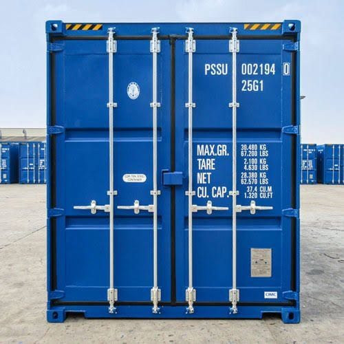
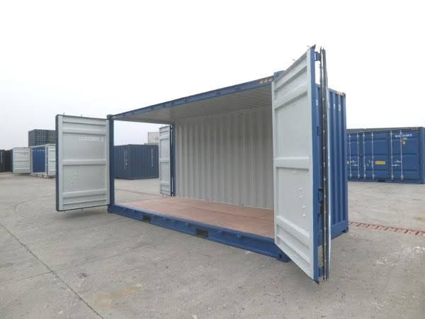
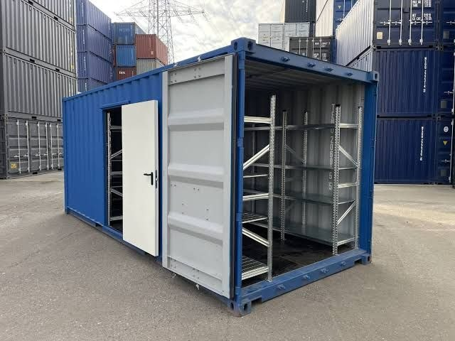
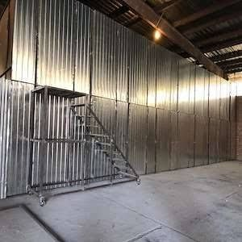

چند کارتن و وسایل کمحجم
لوازم شخصی، چمدان، زونکن و وسایل موقت مستأجران.
بررسی انبار ۶ متریدپو سازگار راهکاری ساده، اقتصادی و قابل اعتماد برای اجاره انبار، اجاره کانتینر و نگهداری وسایل منزل، جهیزیه، لوازم اداری و کالاهای کمحجم در تهران است.
از اسبابکشی موقت تا فضای جانبی کسبوکار، هر سناریو به اندازه و چیدمان متفاوت نیاز دارد.
چهار نقطه شروع رایج را ببینید؛ اندازه نهایی پس از بررسی فهرست وسایل و ابعاد مفید انتخاب میشود.
پیشنهاد متراژ از روی تعداد اتاق بهتنهایی دقیق نیست. ابعاد وسایل بزرگ، تعداد کارتن، مدت نگهداری و نیاز به دسترسی دورهای کنار هم بررسی میشوند تا هزینه فضای خالی یا سفر دوباره باربری کمتر شود.
مطالعه راهنمای جامع اجاره انبار ←تفکیک بار خانگی، اداری و تجاری مجاز پیش از پیشنهاد فضا
توضیح تفاوت انبار متراژی و کانتینری بدون ادعای تأییدنشده
تأکید بر بازدید، ثبت شرایط و مطالعه قرارداد پیش از حمل
ترافیک، محدودیت توقف، بافت مسکونی یا تجاری و الگوی بار در هر منطقه متفاوت است. راهنمای هر محدوده به شما کمک میکند هزینه حمل و دفعات مراجعه را کنار اجاره ماهانه ببینید.
محل دقیق گزینه موجود در زمان تماس تأیید میشود؛ پوشش منطقه به معنای قرار داشتن همه انبارها در همان محله نیست.
این کارتها نقطه شروعاند؛ ابعاد مفید فضای موجود و شکل واقعی وسایل باید پیش از رزرو بررسی شوند.
لوازم شخصی، چمدان، زونکن و وسایل موقت مستأجران.
بررسی انبار ۶ متریجهیزیه محدود، وسایل یک اتاق و چند قطعه مبلمان.
مقایسه ۱۰ و ۱۲ مترحجم بالاتر خانه، تجهیزات دفتر یا کالای فروشگاهی سبک.
بررسی انبار ۲۰ متریاثاثیه زیاد یا بار تجاری که به زونبندی منظم نیاز دارد.
مقایسه ۲۰ و ۴۰ فوتهر مرحله یک ابهام را کم میکند تا خودرو زمانی حرکت کند که فضا و شرایط روشن شدهاند.
نیاز، زمان و محله مبدأ را توضیح دهید.
اقلام بزرگ، تعداد کارتن و موارد حساس را بگویید.
دو اندازه نزدیک و شیوه چیدمان مقایسه میشوند.
فضای مشخص، دسترسی و مفاد مهم را بررسی کنید.
پس از ثبت توافقها، تحویل و چیدمان انجام میشود.
تصاویر برای آشنایی بصریاند؛ شرایط و ظرفیت گزینه نهایی را هنگام بازدید تأیید کنید.




تعداد اتاقها، وسایل بزرگ و تعداد تقریبی کارتنها را اعلام کنید. پس از برآورد اولیه، اندازههای نزدیک با هم مقایسه میشوند تا فضای اضافه اجاره نکنید.
هماهنگی بازدید بخشی از فرایند پیشنهادی است. زمان، محل دقیق و گزینه موجود را تلفنی قطعی کنید و ویژگیهای مهم را هنگام بازدید بررسی کنید.
مواد خطرناک، قابل اشتعال، فاسدشدنی، غیرقانونی یا اقلام دارای شرایط نگهداری تخصصی نباید بدون تأیید کتبی وارد شوند. فهرست محدودیتها را پیش از حمل بگیرید.
اندازه فضا، مدت قرارداد، محل و شرایط گزینه موجود بر قیمت اثر میگذارد. برای عدد معتبر باید حجم بار و تاریخ شروع مشخص باشد.
در اجاره کوتاهمدت سرعت تحویل مهمتر است؛ برای دوره طولانی باید بستهبندی، شرایط تمدید، دسترسی و هزینه کل قرارداد دقیقتر بررسی شود.
نوع وسایل، حجم تقریبی و مدت مورد نیاز را اعلام کنید تا انتخاب فضای مناسب از یک برآورد روشن شروع شود. همه خطوط زیر برای مشاوره و هماهنگی در دسترساند.
گفتوگو در واتساپ با ۰۹۱۰۲۵۶۷۹۰۶